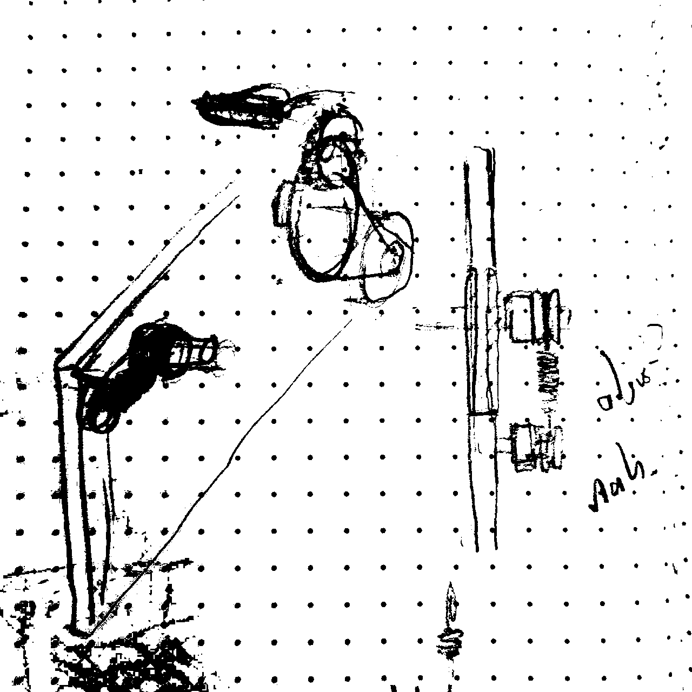
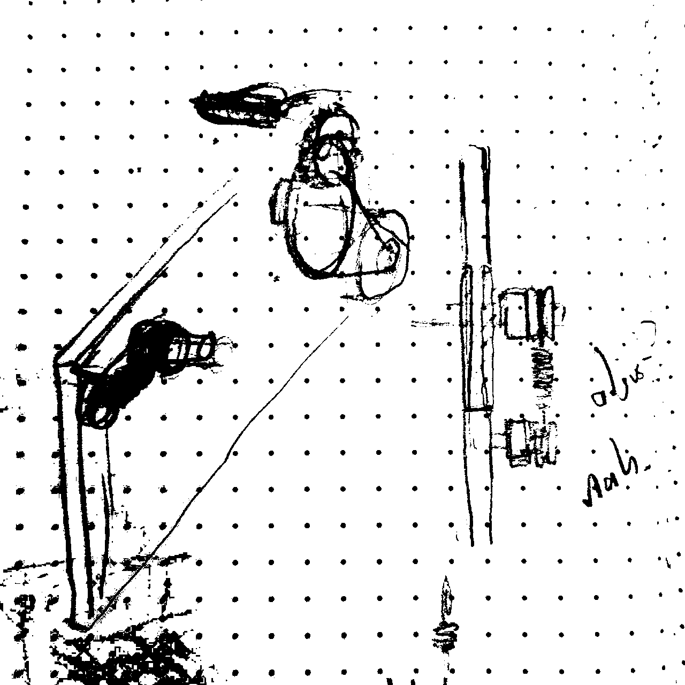

adlow.online 
(θ,z) Crosstalk Echo - 2025
desc
(θ,z) is an experimental magnetic tape loop player designed for freeform exploration through dual-axis control. In a departure from traditional tape players and recorders, of which virtually all are linear, this device enables users to navigate bidirectionally across both rotational (θ) and perpendicular (z) axes of a loop of 2” tape.
This allows recording and manupulation of sound through uniquely non-linear, intuitive methods using a joystick and single rec/play switch. Computer controlled motors and actuators give the user tactile access to the multidimensional possibilities of magnetic recording, which is territory typically reserved for the black box processes of hard drives and floppy disks.
mechanisms + tape path
The device is centered around the two given axes of motion, across which the position of the playhead and tape underneath it are controlled. The position of the play/record head orthogonal to the axis of rotation is determined by a stepper-driven lead screw assembly, which takes computer input to transfer the stepper motor’s rotation to linear movement. The playhead is simply mounted to the actuator on the underside of a custom arm.
The rotation of the tape is controlled via a bidirectional motor, coupled to a belt and gear assembly which directly drives the left-most spindle. Taking notes from traditional tape player design, this spindle functions as the capstan, which is responsible for transferring most of the torque onto the tape. To prevent slippage, the capstan is coupled with a ‘pinch roller’, a rubber roller which is held in tension against the capstan, with the tape between the two. The right-most spindle, which rests just underneath the playhead, is free-rolling, with its shaft resting in a slot, allowing for adjustments in the distance between the two spindles; this system keeps the tape loop under tension. This system is visible in the sketch to the right.
 


electronics
Virtually all of the circuitry for this project was assembled piecemeal from off the shelf boards. Control is handled by an Arduino Uno, driving both the linear actuator (via an A4988 driver) and the DC motor (via a PWM H-bridge). The system is powered by a reclaimed 21V PSU, stepped down through DC-DC converters for the various subsystems. The playback and recording circuit is borrowed from a Radio Shack walkman clone, with its manual record switch actuated by a servo motor, (which is the part I am least proud of)
construction + assembly
The first prototype/proof-of-concept was constructed using entirely salvaged tape recorder parts, an erector set, and bare bones electronics. This largely worked as far as demonstrating the basic functionality, but the tape transport would require substantially more precision to make passable recordings. For the next iteration, I chose to mount the spindles, the belt flywheel and drive gear, as well as the motor in a pair of 5mm thick plastic walls. It was important to get the right kind of plastic, opting for UHMW polyethylene for its resilience and low friction.
Much of the structure in this version is still reliant on the erector set system, which provides *just enough* stability for functionality. The gearing was one of the more difficult parts as well. Ensuring that I got smooth, true rotation on the spindles (made from 2, 1" nylon bushings) proved to be a challenge with my limited equipment. Getting the appropriate tension on the belt as, as well as on the the tape loop itself was a balancing act. The reliable operation of this system is dependent on many small variables that this prototype lacks the precision to tweak, despite my forethought. The enclosure in constructed out of 5 panels of high density pegboard, with holes left for the tape path and controls. This process left much to be desired, as joining the fiberboard with the erector set would have required much more preplanning and design than I had the time for.


failures
Because of my time constraints and other obligations for the semester, I was unable to execute this project with the precision and stability it demanded. A baseplate (and potentially outer enclosure) manufactured from machined steel or aluminum, with mounting brackets and more stability in the walls would fix many of the limitations of recording. The Flutter and Wow are bad, and the recording circuitry is not geared towards fidelity in the first place, meaning that the final quality of the device’s output is very poor. The dupont wire assembly of many of the components means that the device is even less reliable, with a high possibility of things to fail or get disconnected.
future directions
My earlier sketches were wanting more fine computer control over the position of the two axes. This would have been accomplished with a feedback network of encoders and optical sensors. With some code to analyze the error between the motor output and encoder input, this information could be converted into a coordinate system, hence the vector style of the name. Ideally, possibly through a keyframe interpolation system, these coordinates could be replayed at will, at any speed, in either direction. This system would also lend itself to use with G-code, since those systems and libraries are already well esteablished. This brings with it a whole host of design considerations, digital diplays, interface methodology. This current prototype has dead-simple controls, as optimization of user interaction has always been one of my foremost concerns.
Going forward, all of the design will be geared towards reliability and manufacture, with stable and reliable materials, precision machining, and custom circuitry. A lot of this semesters work was spent on trying to approach it from that dircetion, with some prototype playback circuits made, but none far enough to be brought to production.

whats next